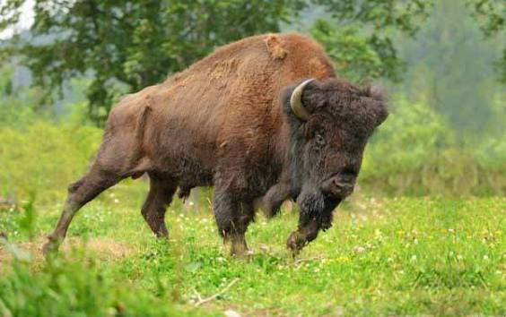
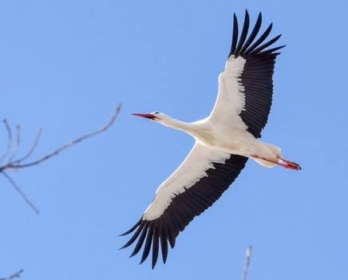
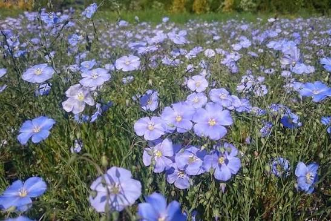

The giant of Belovezhskaya Pushcha and the national animal of Belarus. It symbolizes strength, dignity, and the preservation of pristine European nature.

A beloved bird considered a symbol of peace, luck, and strong family values. Belarus is often poetically called "the land under white wings.

A small blue flower deeply rooted in Belarusian culture. It represents hard work, purity, and the traditional craftsmanship of linen weaving.
